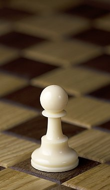
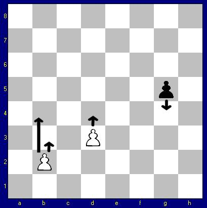

La partita inizia con 16 pedoni, otto per colore, posizionati davanti agli altri pezzi del proprio colore nelle case indicate in notazione algebrica (da a2 a h2, e da a7 a h7).Il pedone può muoversi solo di una casa in avanti, tolta la possibilità di avanzare di due case solo dalla posizione iniziale. Può catturare i pezzi avversari che si trovano in una delle due caselle oblique a lui adiacenti (a eccezione della presa en passant): è quindi l'unico pezzo che mangia in modo diverso dal proprio normale movimento. Se un pedone riesce a raggiungere il lato opposto della scacchiera, il proprietario del pedone lo deve promuovere sostituendolo con un qualsiasi altro pezzo a sua scelta (purché dello stesso colore, e che non sia il re).

